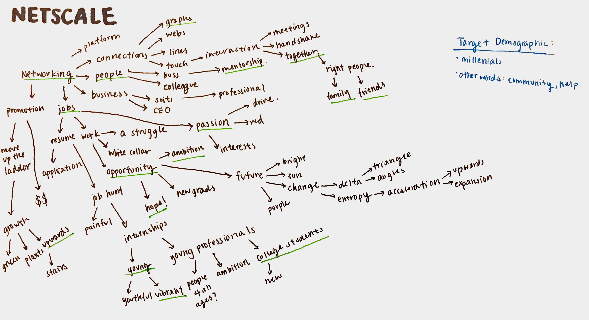
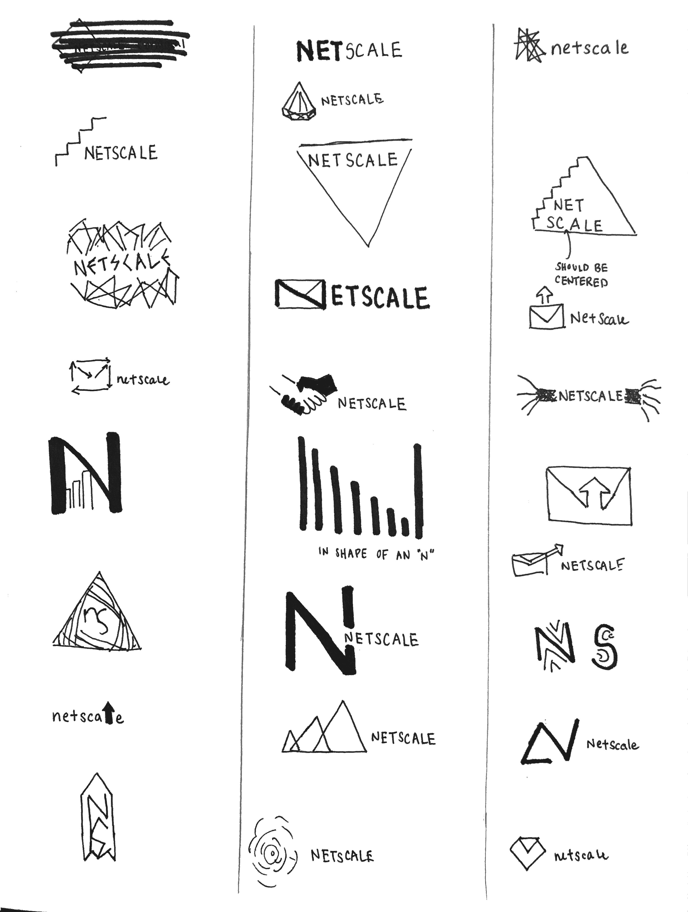

NETSCALE
may–sept 2017
overview—
user interface/experience, branding, social networks Sketch, Invision
introduction—
Over the summer, I worked as a designer for a student startup on campus called Netscale. The product is a professional networking platform targeted at college students. Since many people find their first job or internship through connections, Netscale aims to make these connections more accessible.
branding—
First, I was asked to design the company's branding. The branding would be used on all of the company's platforms and promotional materials. To begin, I started by creating a mind map to get a better sense of what the company represented and what image the company wanted to project.

After gaining a better idea of Netscale's founder saw for the company, I sketched a variety of ideas for the logo. I went through a few iterations of logo sketches.

We chose our favorite designs and I started to digitally vector them. Eventually, we decided that the three triangle design was everyone's favorite, so I continue to explore different versions of the logo.
Throughout my sketches, I was very inspired by the concept of using triangles to represent change. In mathematics and science, the triangle (delta) represents change, so I was playing around with that idea. In addition, since Netscale's concept focuses on bringing people up and brings about the idea of progress, I also used a lot of arrows or different imagery to convey this idea.
user interface—
As the only designer on the team, I also had to design the user interface of the software. Once I figured out the functionality of the product, I sketched out some basic wireframes.

After receiving some feedback from the team, I continued to make a more detailed wireframe. Since my first sketches were rather vague, I worked with the founder to fully flesh out the features and requirements that the application need. To aid me in this process, I would make with him low fidelity interactive prototypes to get a better sense of the flow/features and the vision he had for the product.
In my designs, I wanted to create continuity in the branding, UI designs, and Netscale's concepts. To do this, I made use of triangles in my design. I also wanted to use the triangles as interactive buttons to help the user interface flow.
After creating a semi-functional prototype, we started reaching out to potential stakeholders to see what their opinions were. The feedback helped bring focus to the design. One of the criticisms were that there was too much whitespace in the user interface, and that the design was not engaging enough. Furthermore, around this time, the founder began to add a variety of features to the platform. Consequently, we decided to go back to the drawing board to ideate about the features and layout some more.
I also decided to change some of the colors for the branding to make it more engaging for the user. Instead of using the original blue and orange scheme, I changed to a more colorful palette. This time, I used green as the primary color because I found that it was more representative of Netscale's values (color theory).
We continued doing some interactive mockups like we did before. After a few rounds of iterations, I made a high fidelity prototype.